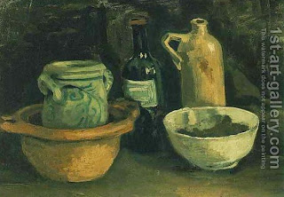

Bava Metzia 60 - Deceptive Business Practices

What is deemed deception and what is considered a legitimate business practice?
One who sells grain from a certain field may not mix grain from other fields, even if mixing new grain with new of the same quality. However, strong wine may be mixed into mild wine at the time of wine-making, since it improves the taste.
Rabbi Yehudah says, "A storekeeper may not distribute toasted grain or nuts to the children, because he accustoms them to come to him," but the Sages permit this. He may not lower the price of his goods below market price, but the Sages say, "He is remembered for good."